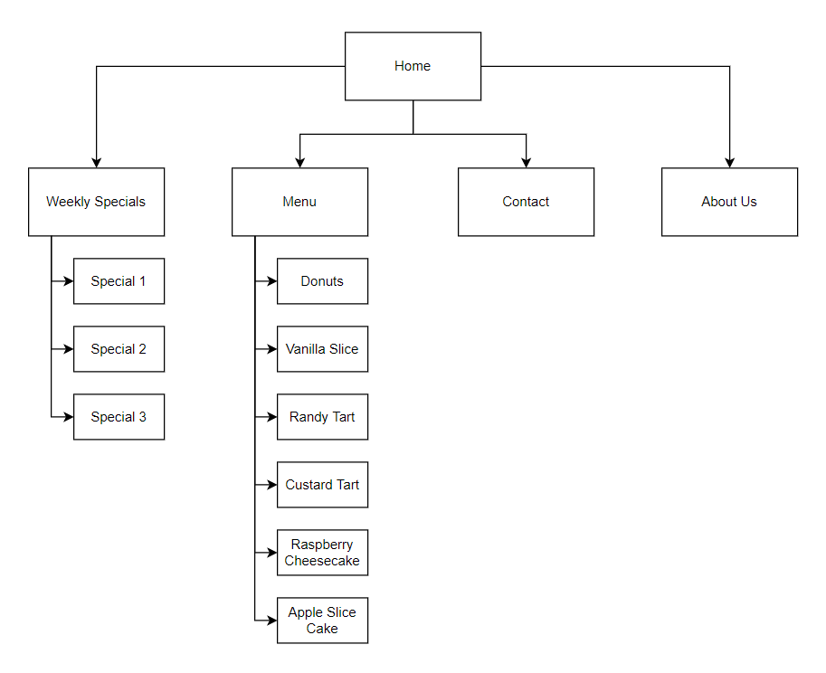
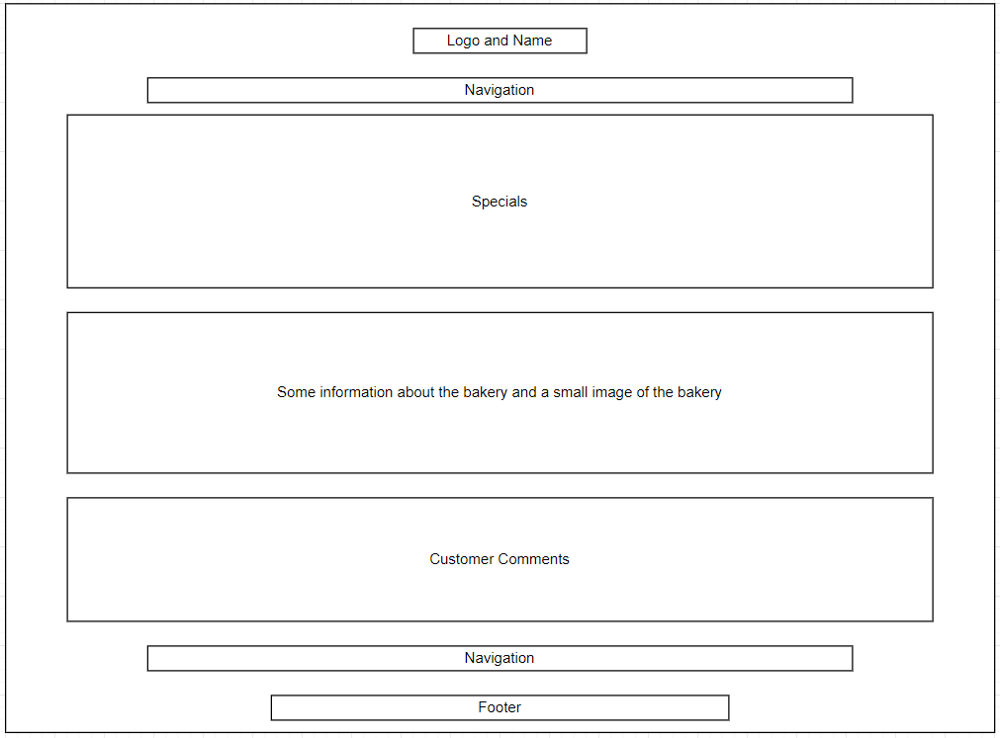

Abhinav Ranjan (jc833953)
The project is to build a website for Petite Treats, a small bakery in Kirwan. The customer is looking to create a presence online to improve their business by getting new users and also making it more convenient for current customers.
The goal is to build a good, customer centric website for a small bakery in Kirwan which will lead to an increase in sales and make their business more competitive in the modern world which is moving increasingly online.
The site would be considered successful if business for Petite Treats, both from new and repeat customers, increases noticably after a few months of the website being online.
Target audience is mostly young families and young people around the age of 17-35. The catering service is geared more towards businesses.
I intend to use a light theme with #fefefe (almost white) as the background colour and #222222 (dark grey) as the font colour, some elements (like the specials button) will be in a different colour to attract attention of potential customers. I will be using the Helvetica font with Arial and Sans Serif as secondary backup fonts.
The expected costs are as follows:
The expected timeline is as follows:


This is what I want the home page to look like.